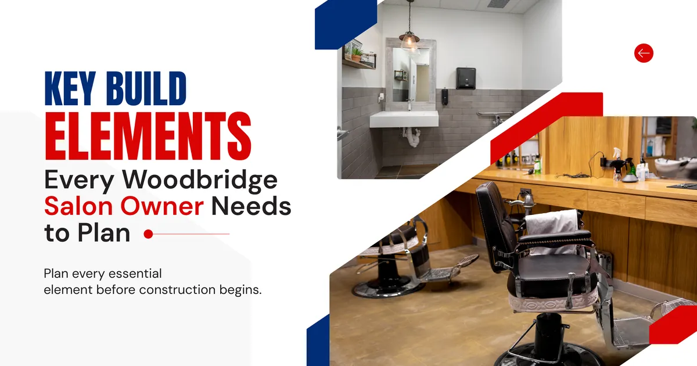
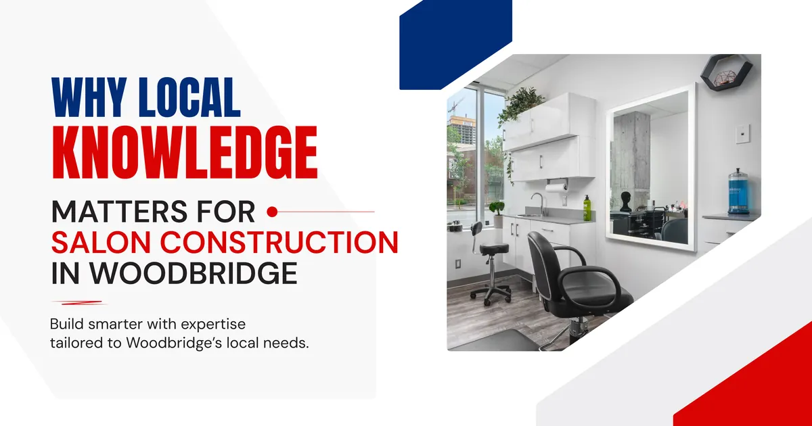
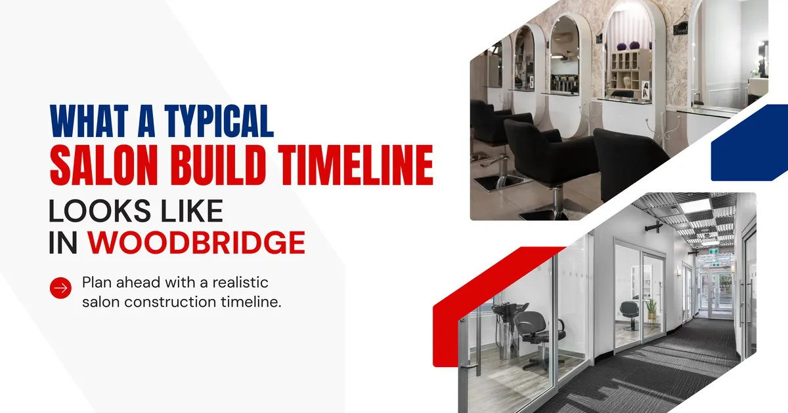
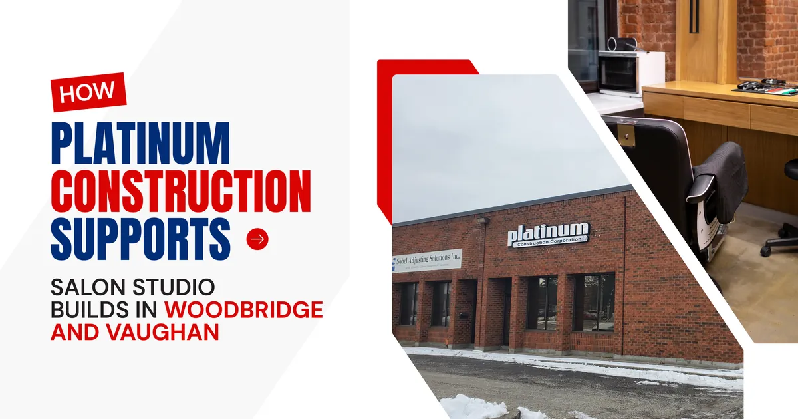

But before you open your doors, there is a build out to get through first. And for many new salon owners, this is the part of the journey that comes with the most surprises.
Salon construction is more specialized than most people expect. It involves dedicated plumbing runs, electrical systems designed around high draw equipment, ventilation that handles chemical fumes safely, and a layout that needs to work for stylists and feel welcoming to clients at the same time. Getting these details right from the start saves money and prevents the kind of problems that are expensive to fix once walls are closed.
This guide is written specifically for new salon business owners in Woodbridge and the surrounding areas of Vaughan, Woodbridge, Kleinburg, Maple, Concord, and Vellore Village who are about to go through this process for the first time.
What Makes a Salon Build Different From a Standard Commercial Renovation
A lot of first time salon owners come into the build out process thinking it is similar to any other retail renovation. Paint the walls, lay some flooring, add a few chairs, and you are done. The reality is considerably more involved than that.
Every shampoo bowl needs its own plumbing rough in with hot and cold water supply and a proper drain connection. Every styling station needs dedicated electrical capacity so that dryers, flat irons, and processing lamps can all run at once without tripping breakers. Color processing areas need ventilation systems designed to move chemical fumes out of the breathing zone. Reception and retail areas need their own lighting circuits and power setups.
None of this is impossible to plan. But all of it needs to be planned before construction starts, not figured out during it. Working with a commercial builder in Woodbridge who has built salon spaces before is one of the clearest advantages a new salon owner can have going into this process.
Plumbing Placement Is the Decision You Cannot Undo Easily
Shampoo bowl placement determines where your plumbing rough in goes. Once those pipes are inside the walls and under the floor, moving them is a significant expense. This is why your layout needs to be finalized before the build begins, not changed midway through.
An experienced Woodbridge ON construction team will walk you through the layout conversation early, help you understand the cost differences between placement options, and make sure the plumbing is sized correctly for the number of stations you are planning from day one.
Electrical Loads in a Salon Are Higher Than Most Commercial Tenants
A salon running at full capacity draws a lot of power. Professional dryers, multiple flat irons, color lamps, a reception computer, point of sale systems, and general lighting all run simultaneously during peak hours. If your electrical panel and circuits are not sized for that load, you will deal with tripped breakers and underpowered stations once you open.
A Vaughan commercial construction team with experience in salon builds factors this into the electrical design from the start. The cost of getting it right upfront is a fraction of what it costs to come back and upgrade it later.

Key Build Elements Every Woodbridge Salon Owner Needs to Plan
Whether your space is in a commercial plaza along Rutherford Road, near the Woodbridge core, or in a newer development in Vellore Village or Concord, these elements come up in almost every salon build out.
| Build Element | What to Plan For |
|---|---|
| Plumbing | Shampoo bowl count, water supply sizing, drain routing |
| Electrical | Station capacity, lighting circuits, reception and retail power |
| Ventilation | Chemical fume extraction, HVAC sizing for occupancy load |
| Flooring | Slip resistance, durability, ease of cleaning between clients |
| Lighting | Task lighting at stations, ambient lighting for client comfort |
| Storage | Back bar layout, product access, equipment organization |
| Reception Area | Client flow, retail display, point of sale integration |
Going through each of these elements in a planning meeting before construction starts is one of the most valuable things a new salon owner can do. It prevents the mid project changes that push timelines and budgets in the wrong direction.

Why Local Knowledge Matters for Salon Construction in Woodbridge
Building in Woodbridge and the broader York Region means working within the City of Vaughan's permit and inspection framework. Salon builds typically require permits covering plumbing, electrical, and mechanical work at minimum. How smoothly this process goes depends largely on how familiar your contractor is with local requirements.
A Vaughan commercial construction company that regularly works in this area already knows what inspectors look for, how long approvals typically take, and which parts of the process need the most attention. That local familiarity saves time in ways that a contractor working in the area for the first time simply cannot replicate.
The same advantage applies when it comes to subcontractors. A York Region contractor with established relationships with local plumbers, electricians, and HVAC technicians can coordinate more reliably than one pulling in unfamiliar crews for each new project. In a build where timing and sequencing matter, that reliability is worth a great deal.
Permit Timelines in Vaughan and What to Expect
New salon owners are often surprised by how much time the permit stage takes. In Vaughan and across York Region, commercial build out permits can take anywhere from four to eight weeks to process depending on the scope of work and the time of year. Planning your lease start date and target opening around this reality prevents the frustration of a space sitting empty while waiting for approvals.
A Woodbridge ON construction company with local experience will build realistic permit timelines into your project schedule from the very first conversation, rather than presenting an optimistic timeline that falls apart once the permit office weighs in.

What a Typical Salon Build Timeline Looks Like in Woodbridge
Timelines vary based on the size of the space and how much infrastructure work is involved. Here is a realistic picture of how a salon build out typically moves from start to finish in the Woodbridge and Vaughan area.
| Stage | Typical Duration |
|---|---|
| Design finalization and permit application | 4 to 8 weeks |
| Demolition and site preparation | 1 to 2 weeks |
| Plumbing and electrical rough in | 2 to 3 weeks |
| Framing, drywall, and ceiling work | 2 to 3 weeks |
| Flooring, fixtures, and finish work | 2 to 3 weeks |
| Final inspections and occupancy sign off | 1 to 2 weeks |
Most salon studio builds in the Woodbridge and Vaughan area run between three and five months from permit application to opening day. Smaller spaces with simpler layouts can move faster, while larger builds with more complex plumbing or ventilation requirements take longer.
Common Mistakes New Salon Owners in Woodbridge Make During Construction
Knowing what tends to go wrong helps you avoid paying for other people's lessons.
Signing a lease before confirming the build out budget is one of the most common and costly mistakes. A space that looks affordable on paper can become a financial strain once the actual construction requirements are factored in, especially in older commercial buildings where electrical and plumbing upgrades are needed.
Choosing a contractor based solely on price is another pattern that shows up regularly. A lower quote from a general contractor without salon specific experience often leads to change orders, delays, and finishes that do not hold up under the daily demands of a working salon. The savings on paper rarely survive contact with the actual project.
Not budgeting for contingency is the third mistake that catches first time owners off guard. Even the most carefully planned salon build can encounter unexpected conditions inside an existing commercial space. Setting aside ten to fifteen percent of the project budget for contingency is a standard practice for a reason.

How Platinum Construction Supports Salon Studio Builds in Woodbridge and Vaughan
At Platinum Construction, we have supported salon studio build outs across Woodbridge, Vaughan, Maple, Concord, Kleinburg, Vellore Village, and Thornhill. We understand the specific construction requirements that salon spaces demand and we understand the local permit and inspection landscape that affects projects in York Region.
Every salon project we take on starts with a thorough planning conversation. We want to understand how many stations you are running, where you want your shampoo bowls, what your target opening date looks like, and what your realistic budget is. From there we develop a detailed, itemized estimate that reflects the actual project, not an optimistic version of it designed to win the bid and grow later.
We assign a dedicated project manager to every build who stays in regular contact throughout construction. You will always know what is happening on your site, what is coming next, and who to call if you have a question.
If you are opening your first salon studio or expanding an existing brand into a Woodbridge or Vaughan location, we are ready to help you build a space that works the way you need it to.
Frequently Asked Questions
How much does a salon studio build out cost in Woodbridge
Costs vary depending on the size of the space, the number of stations, and existing infrastructure conditions. Most salon builds in the Woodbridge and Vaughan area range from sixty thousand to over two hundred thousand dollars depending on scope.
Do I need permits to build out a salon in Woodbridge
Yes. Salon build outs in Woodbridge and across Vaughan require permits for plumbing, electrical, and mechanical work at minimum. A local contractor manages this process as part of the project.
How long does a salon build take in the Vaughan area
Most projects run between three and five months from permit application to occupancy. Smaller spaces with simpler layouts can move faster.
What is the most important layout decision to make before construction starts
Shampoo bowl placement. Once the plumbing rough in is done, moving those locations is expensive. Finalize your layout before any construction work begins.
Why should I hire a local contractor in Woodbridge for a salon build
A local contractor in Woodbridge or Vaughan understands regional permit timelines, knows what local inspectors look for, and has established relationships with local subcontractors that help keep the project on schedule.
What should I look for in a salon construction estimate
Look for an itemized breakdown that covers plumbing, electrical, ventilation, finishes, and permit costs separately so you understand exactly what you are paying for before work begins.
What is the biggest budget risk in a salon build out
Hidden infrastructure issues in older commercial spaces are the most common source of budget surprises. A thorough site assessment before finalizing your estimate is the best protection against this.
Final View on Salon Studio Construction, Design, and Renovation for Business Owners
A well built salon studio sets the foundation for everything your business will become. The layout, the systems, and the finishes all affect how your stylists work and how your clients feel from the moment they walk through the door.
Taking the time to choose the right commercial builder in Woodbridge, one who understands salon construction specifically and knows the local permit landscape, is one of the most valuable decisions you will make as a new business owner.
If you are planning a salon studio build in Woodbridge, Vaughan, or anywhere across York Region, Platinum Construction is ready to talk through your project. Visit platinumconstruction.com to book a free consultation and get started.